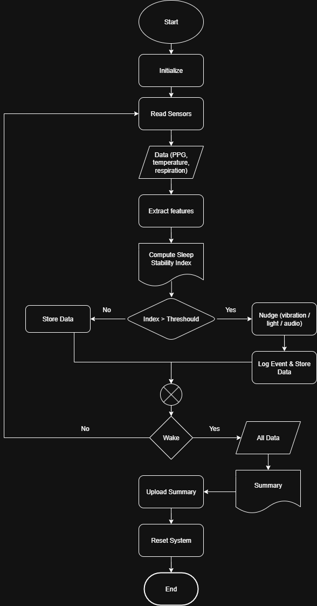

Overview项目概述
Designed and prototyped a microcontroller circuit on a Raspberry Pi Pico, integrating multiple LEDs, current-limiting resistors, a pushbutton, and a transistor on a breadboard. Developed accompanying system logic documented as a control flowchart covering sensor reads, feature extraction, threshold-based decisions, and event logging. Demonstrates embedded hardware bring-up and control-flow design.在 Raspberry Pi Pico 上设计并搭建了一个微控制器电路原型，在面包板上集成了多个 LED、限流电阻、一个按钮和一个晶体管。还编写了配套的系统逻辑，并以控制流程图的形式记录，涵盖传感器读取、特征提取、基于阈值的决策和事件记录。展示了嵌入式硬件调试与控制流程设计。
Gallery图库
Click any image to enlarge.点击任意图片可放大。

Breadboard wiring schematic: Raspberry Pi Pico driving status LEDs, a pushbutton input, and a transistor面包板接线原理图：Raspberry Pi Pico 驱动状态 LED、一个按钮输入和一个晶体管。

Control-flow diagram for the sensing system: read sensors, extract features, compute stability index, and act on threshold感知系统的控制流程图：读取传感器、提取特征、计算稳定性指标，并在超过阈值时执行动作。